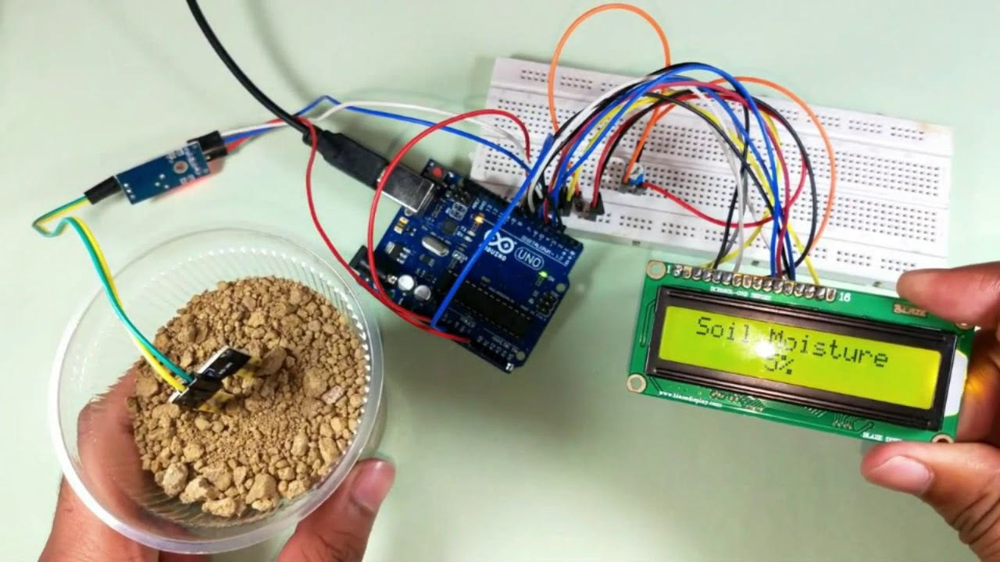

Welcome! Stay and look around!
Name: Chrisxena Maria Edwards
Age: 28
Location: 237 Old Hope Road, Kingston, Jamaica
Programme of Study: BSc Computer Science
Getting to know me Better

Top 3 Personality Traits
- I’m Highly motivated
- I’m Persistent
- I’m Kind
Having the ability to motivate oneself in an academic environment which consistently throws obstacles in your way is a treasure trait I hold close to my heart. At times like everyone else I may get demotivated and feel like quitting, however, this is where my second trait shines. I find joy in a challenge at times, it really feels good to immerse yourself so deep into an issue and then succeed, never even knowing how. My last trait is something I’ve learnt from my parents and even though it may sound clique “Kindness is a virtue” and in this world today it is something that’s very hard to find. It has led me to make many wonderful connections here as an international student and university is never something you can succeed in alone.
Top Hobbies
- Sketching
- Coding
- Volleyball
Even though I have many hobbies, since I love trying new things, my most consistent ones are: Sketching- Sketching has taught me profound patience, the need to observe, retreat when needed, adjust and when move forward again. All very important things not only when navigating this school system but also life. With this method I have learnt to tackle and deal with many issues and even the means in which to approach people. Coding- Similarly to sketching, coding has maxed my patients, but it has also included a touch of logic and structure in my life, things I am ashamed to say were highly needed before. This structure has helped me to manage the many tasks that have been given to me in this school environment. Not only academic wise but also club-wise, dorm-wise and life-wise. Volleyball- This sport has helped me challenge my limits as someone who was born with a disability, because the world looks at you differently you have the tendency to unconsciously limit yourself. Volleyball has be a consistent reminder to me of my capabilities despite challenges.
Favourite Quote from Hero
My favourite quote from my hero is Proverbs 3:5-6 “Trust in the Lord with all your heart and lean not unto your understanding, in all your ways acknowledge him and he shall make you path straight. I love this quote because it reminds us that in times when we don’t understand, or even in times when we think we do keep on leaning on him because he will never lead us astray. If we keep faith in him, we can walk without fear. He is my hero because there is no greater love than dying to save someone. He didn’t use words to demonstrate his love or claimed that it should be naturally understood. No, he came to earth, he lived like us, walked with us, worked miracles, felt pain like us, and chose to die for us so that we may have the chance to live again.
AI Business Idea of 2025
Among the AI business ideas reviewed, AI-based Smart Home Management emerges as my top choice. This sector is experiencing rapid growth, with industry leaders like Google Nest and Samsung SmartThings creating intelligent systems that seamlessly manage lighting, temperature, security, and energy consumption in real time. Leveraging AI, these platforms learn household routines, adjust devices automatically for optimal efficiency, and promptly alert users to unusual activity.
In my personal experience and within my region, this technology has the potential to revolutionize both household management and apartment living. For instance, in Caribbean homes where electricity costs are high, AI-powered energy optimization can significantly reduce bills by monitoring appliance usage and automatically switching off lights or air-conditioning units when they are unnecessary. As more households adopt renewable energy sources such as solar panels and battery storage, a smart management system could intelligently balance solar and grid power, scheduling high-consumption appliances like washing machines to operate when solar energy is most abundant.
Usefulness
- Safety: It can use motion detection in real-time and alert the users of intrusions or fires.
- Energy Efficiency: The smart system can turn off appliances and lighting fixtures not in use, therefore reducing the waste of electricity. Renewable resources can also be integrated.
- Comfort: With a home that now knows your preferences better than you do it is impossible to feel uncomfortable.
Ethical issues and solutions
- Issue 1: Data Privacy. Smart devices constantly gather information about what happens in the home. If this data is hacked or shared without permission, it could be misused.
Solution: Enforce strong encryption, require explicit user consent for data collection, and ensure users can easily delete stored data. - Issue 2: Device Dependence and E-waste. Fast product updates can lead to more electronic waste and make users rely too much on manufacturers.
Solution: Support open standards for interoperability and encourage recyclable, modular hardware.
App: An example of this technology is the Google Nest App
